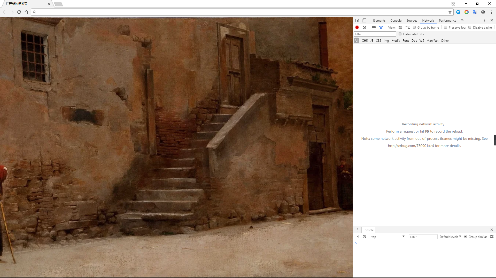
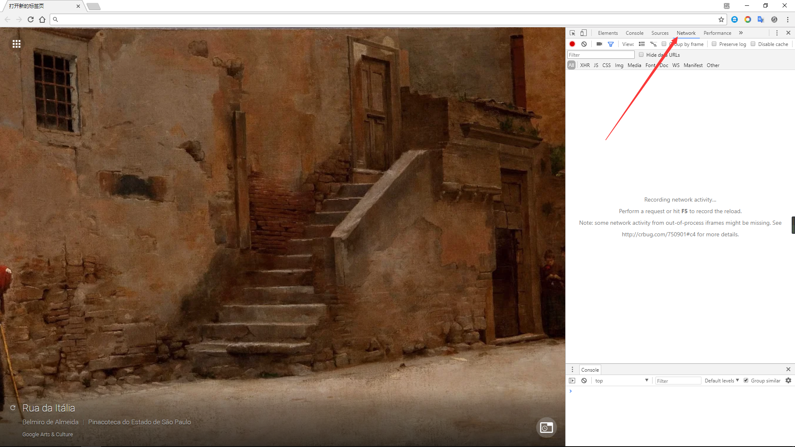
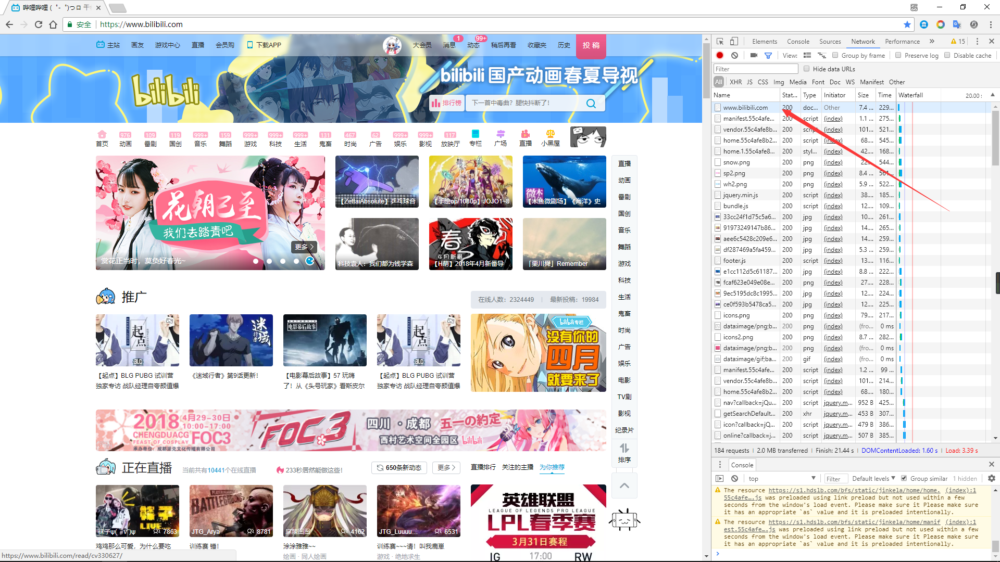
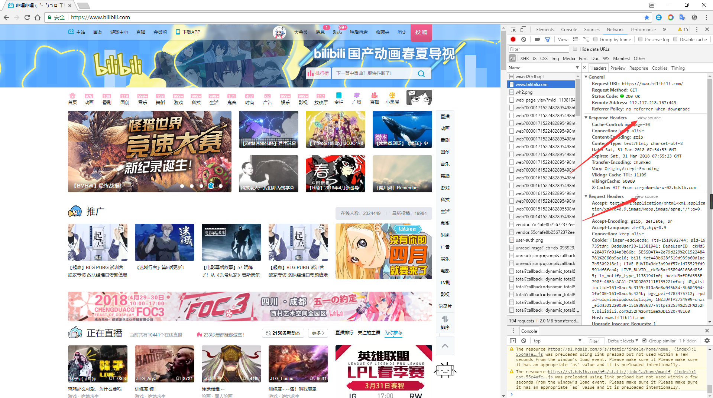
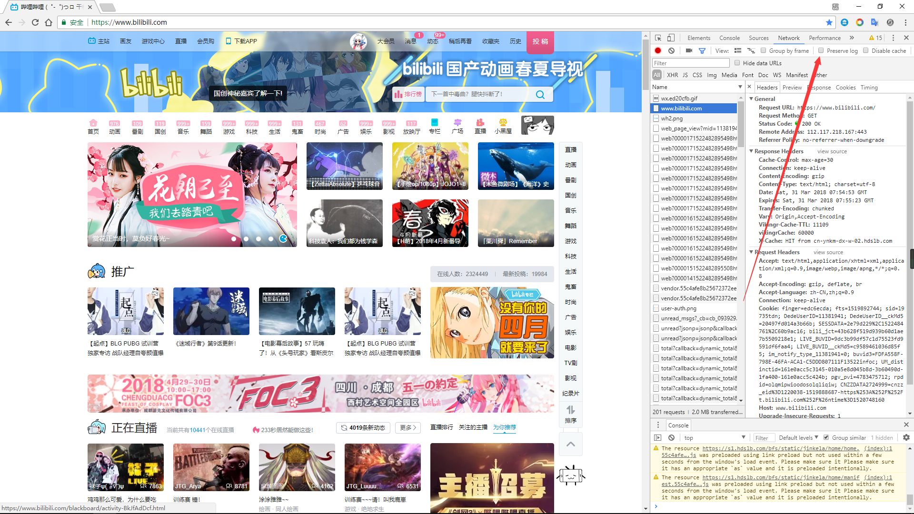

HTTP是什么？
HTTP是HyperText Transfer Protoco的缩写，中文译作“超文本传输协议”，HTTP构建在TCP传输协议的基础上，处于应用层，设计HTTP最初的目的是为了提供一种发布和接收HTML页面的方法，不过目前HTTP协议已经不仅仅只为传输HTML服务，还有其他功能，不过传输HTML仍然是最主要的。
怎样使用HTTP?
在浏览器输入输入以HTTP或HTTPS作为协议名的URL就可以了
比如：https://www.google.com.hk/search?q=URL&oq=URL
什么是URL?
URL(统一资源定位符)是URI（统一资源标识符）的子集，或者说是一种具体实现，URI的定义不太好查，我的理解是URI是为了标识某一资源使用的某种编码方法，URL是通过使用其位置的方法标识资源，URI的另一个子集URN（统一资源名）是通过给予一个唯一的编码来标识资源。
URL的具体样子
协议名://域名 端口 路径 ?查询参数 锚点
比如上文中的https就是协议名 www.google.com.hk为域名，端口这里留空，意思就是使用默认协议端口,https的默认端口为443，/search为路径，?q=q=URL&oq=URL就是请求参数，请求参数以?开头，以&来分割每一对请求参数，#为锚点，主要用来在HTML精确指定展示的段落。
回车后会发生什么？
浏览器会将其解析URL中的协议名，准备使用指定的协议发送报文，解析到主机时，使用DNS查询主机的ip地址，
DNS又是什么？
域名解析服务，互联网的世界里只需要一串数字（ip）就可以标识一台唯一的主机，但是纯数字往往人记不清，比如谷歌的一台服务器ip：172.217.1.131，远远没有google.com.hk好记。域名等级从右向左看所处的位置，每隔一个点降一级，比如www.google.com.hk，hk是顶级域名(一级域名)，com是二级域名，google是三级域名，www是四级域名，查询域名的方式是从一级域名开始，一级级向下查询,其中还有内置的根域名服务器，主要用来查询顶级域名。
DNS又是怎么运作的？
DNS采用一级级域名分配的方式方便查询，比如我们目前请求的主机名（域名）为https://www.google.com.hk。
首先会查询我们本机的缓存，如果没有或者过期，就向当前网关指定的DNS服务器进行查询（在家庭里通常是你的路由器），如果仍然没有查询到，就会再向上级查询，通常这级请求的就是ISP的DNS服务器（互联网服务提供商，也就是我们经常说的联通，电信，移动这些电信运营商），ISP的DNS服务器拥有大量的缓存，更新也比较及时，基本在这里就会心满意足的得到IP了（不这样每次输个网址等大半天，不然得被投诉死），但是如果真的ISP的DNS服务器也没有呢？这时就会进入标准流程，服务器检查本地是否有.hk域名解析服务器的地址，如果没有会向13个根服务器（或其镜像）查询.hk域名解析服务器的地址，当然作为香港地区的一级域名，ISP的域名解析服务器一定会缓存的，ISP的DNS服务器向.hk的域名服务器询问www.google.com.hk的ip地址,.hk给出其子域名.com.hk的域名服务器地址，ISP域名服务器再向.com.hk的域名服务器询问，.com.hk的域名服务器返回.google.com.hk,再次查询，终于得到结果，OK。其实DNS有两种查询方式，分为递归查询和迭代，递归查询和迭代查询，递归要求必须返回最终的准确结果，迭代查询返回的是下一个子域名DNS服务器的地址，我们这里举例的就是迭代查询。
DNS这里就告一段落了
得到ip准备发送报文
解析到ip就可以准备发送报文了
为了看见自己发送的报文，我们可以使用curl命令来查看整个过程。
学习curl命令的使用
直接使用
1 | curl |
会直接输出返回的HTML文档
1 | curl -s |
不要显示进度和警告，多余的东西闭嘴不要告诉我
1 | curl -v |
显示更多的连接信息，其中
>你发送的部分<你收到的部分*由curl提供的辅助信息
1 | curl -H "xxx" |
在报文的head部分添加指定的字符串
1 | curl -X "xxx" |
指定请求的方式
1 | curl -d "xxx" |
指定请求为post时发送的数据
现在我们就用curl 命令来试试请求https://www.google.com.hk
请求部分
我们首先先忽略掉以*开头的部分，从上往下看。
1 | > GET / HTTP/1.1 |
这里请求可以分为4部分
1 | 1. 请求方式 路径及参数 协议版本 |
第一部分
这部分指定请求的关键信息，必不可少。
请求方式
请求方式实际有很多种，最常用的就是get和post。- GET 服务器给我个东西
直接在浏览器输入地址进行访问的方式就是get,get最大的特点就是请求参数是直接附在URL路径的路径后面，这个路径及参数直接显示在浏览器地址栏，并可以被保存为书签，可以在历史记录中看到，get请求的资源也往往可以被缓存。 - POST 寄给服务器一个东西
在HTML中表单默认的提交方式就是POST,表示把数据发给服务器，这部分数据在报文的第四部分，POST不会再地址栏，历史记录中，一般不可缓存。 - PUT 整体更新
没用过，看文章摸不着头脑，待更新 - PATCH 局部更新
同上 - HEAD 给我看下资源的相关信息
用来确定资源的相关信息，再考虑执行什么动作，这样以较少带宽消耗 - OPTIONS 服务器你告诉我一下支持的请求方法。
比如我问一下谷歌支持什么请求方法只支持GET和HEAD。1
2
3
4
5
6
7
8< HTTP/1.1 405 Method Not Allowed
< Allow: GET, HEAD
< Date: Sat, 31 Mar 2018 06:54:15 GMT
< Content-Type: text/html; charset=UTF-8
< Server: gws
< Content-Length: 1592
< X-XSS-Protection: 1; mode=block
< X-Frame-Options: SAMEORIGIN
- GET 服务器给我个东西
路径及参数
值得注意的是这里的路径和URL中定义中的路径不一样，这里会包括参数协议版本
HTTP有很多个版本，低版本支持的东西少一些。
第二部分
这部分作为补充信息，表达更多的东西
比如
1 | Host: www.google.com.hk |
用来指示这个http请求的是那个域名，比如有多个域名都指向同一IP，服务器接收到报文，就查找Host的字段，确定请求的是那个域名下的资源。
1 | User-Agent: curl/7.47.0 |
发起请求的客户端（我）的名称
1 | Accept: */* |
客户端（我）可以接受的数据类型
第三部分
这部分固定为空行，用来分割1、2部分和4部分的联系，有时候我们也以空格为界，把空格上的部分称为head部分，下部分称为body部分。
第四部分
传输的数据。
响应部分
可能已经忘记了我们开始请求的谁了，贴一下命令
curl -s -v -- "https://www.google.com.hk"
这是响应部分
1 | < HTTP/1.1 200 OK |
响应部分其实和请求差不多，也分为四部分
1 | 1. 协议版本 状态码 状态码描述文字 |
这里主要讲一下状态码
状态码分为5段
- 100~199 部分响应
- 200~299 成功
- 300~399 重定向
- 400~499 客户端错误
- 500~599 服务器错误
100状态码
很少遇到，现在steam被墙返回的就是108错误，还有就是需要转换协议遇见过101状态码
200状态码
请求成功 遇见新的再更新
300状态码
重定向到某个地址，一般会在第二部分添加Location字段指定新地址
- 301 请求的资源被永久移动到了新地址，网址改域名了就可能用这个
- 302 请求的资源暂时移动到了新地址，这个我学校登陆认证后的页面就会302返回新地址，这个新地址指向个人主页，个人主页会设置cookies。
400状态码
客户端错误
- 400 请求的报文信息是错误的，写爬虫不填好refer,host这些经常遇见
- 403 请求的支援禁止访问，一般是因为没有权限。
- 404 请求的资源再服务器上找不到
500状态码
服务器错误，我很少遇见。
第二部分
也是辅助性的文本，比如
1 | Date: Sat, 31 Mar 2018 07:03:53 GMT |
响应生成的时间
1 | Content-Type: text/html; charset=Big5 |
第四部分数据的格式和其使用的字符编码
1 | Set-Cookie: NID=127=R-9OY1mXK…… |
用来辨识用户身份
其它部分和请求相同。
使用Google Chrome开发者工具查看
- 打开Google Chrome
- 按
F12，开发者工具就打开了
 - 点击Network
 - 输入你想访问的网址
- 点击新产生的条目，就能看见相关的东西了

Headers主要显示相关的请求头和请求参数，这些信息会被Chorom解码排版，如果想看原始信息，点击view source。

注意：访问新的网页会删除之前访问的列表，如果不想自动删除，勾选Preserve log

OK，以后有什么新东西再来更新。